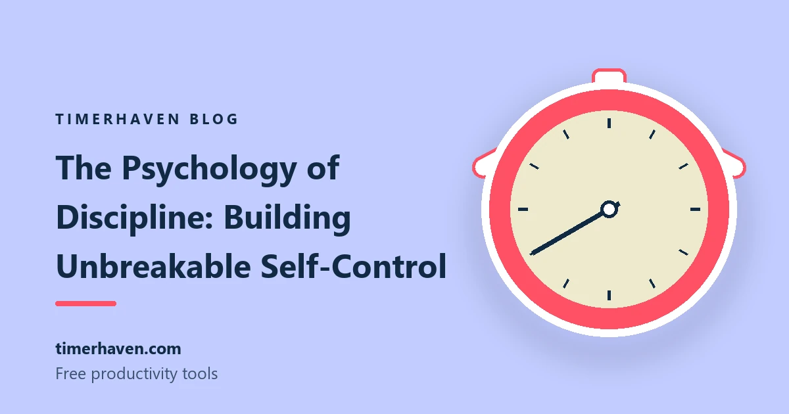

The Psychology of Discipline: Building Unbreakable Self-Control

Most people view discipline as a trial by fire, a miserable slog through tasks you hate. Science reveals a different truth: the most disciplined people aren't the ones with the strongest willpower; they're the ones with the best systems.
We've all been there: staring at a task, knowing we should do it, but feeling an invisible wall of resistance. We call it "lack of discipline." We beat ourselves up. But what if the problem isn't your character, but your neurobiology? Often, what we call a lack of discipline is actually the Psychology of Procrastination in action.
The Muscle Theory of Willpower
Psychologists have long debated the concept of Ego Depletionthe idea that willpower is like a muscle that gets tired after use. While modern research suggests the limit might be more mental than physical, the practical lesson remains: every decision you make (from what to eat for breakfast to which email to reply to first) drains your capacity for self-control later in the day.
01. Pre-Commitment Strategies
Don't wait until you're tired to decide to work. Use our Visual Timer to pre-set work blocks the night before. When the alarm goes off, the decision has already been made.
02. Temptation Bundling
Pair a "must-do" task with a "want-to" reward. Only listen to your favorite Focus Music while doing deep work. The dopamine hit from the music compensates for the effort of the task.
Building Structural Discipline
If you want to stop eating junk food, don't buy it. If you want to stop checking your phone, put it in a different room. This is Environment Design. Disciplined people don't fight temptation; they remove it.
Tired of the Willpower Fight?
Use tools that make the right decision the easy decision. Start tracking your consistency and watch your discipline become automatic.
Build Your System NowThe Identity Shift
The ultimate level of discipline is when it stops being something you do and becomes who you are. Instead of saying "I am trying to wake up early," say "I am an early riser." Once a behavior is tied to your identity, your brain will work overtime to ensure your actions align with that belief. This is the core principle explored in our Atomic Habits Implementation Guide.